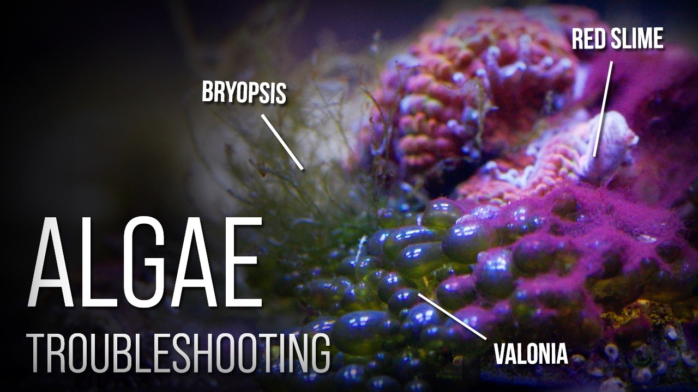

Friday, August 28, 2026 · 36 items · back issues
Howdy, it's Isaac again.
Happy Friday, reefing family, and welcome back to Weekly Dive.
Here are the biggest things worth knowing:
- Coral skeleton records stretching back 1,000 years show El Nino episodes are intensifying as the planet warms…
- Reefapalooza California 2026
- R2R LIVE with Dr. Randy Holmes-Farley! How do corals add calcium and carbonate to their skeletons?
- Under the Sea
- Plus 32 more across wild reefs, husbandry & science, livestock & corals
Let's dive into the news touching our hobby…
Community4
-
R2R LIVE with Dr. Randy Holmes-Farley! How do corals add calcium and carbonate to their skeletons?
Dr. Randy Holmes-Farley discusses “How do corals add calcium and carbonate to their skeletons, and why that mechanism explains many hobbyist observations.”
YouTube · Aug 25 · youtube.com
-
Exploring Point Defiance Zoo & Aquarium | Cold Water vs. Tropical Marine Life | Hilary On Location
Point Defiance Zoo tour contrasts cold-water Pacific fauna with tropical Indo-Pacific reef species and husbandry. Public-aquarium life-support and difficult-species keeping directly applies to hobbyist challenges.
8 min SaltwaterAquarium.com · SaltwaterAquarium · Aug 22 · youtube.com
-
Inside an Incredible 8-Foot SPS Reef | Massive Acropora & Reef Keeping Secrets
A video tour showcases two mature SPS reef systems with discussion of flow, lighting, nutrients, dosing, and filtration decisions. Tank tours offer practical heuristics but lack novel technique or failed experiments that would elevate them beyond hobbyist documentation.
26 min World Wide Corals · Aug 27 · youtube.com
-
Natura iCon MAX
Orphek launched the Natura iCon MAX, a 290W reef LED scaling up the original design with more chips. Incremental hardware update for hobbyists choosing lighting systems.
Product Reefs.com · xeniaforever · Aug 26 · reefs.com
Husbandry & Science10
-
Development of methods for spawning, fertilization, larval husbandry, and settlement in the temperate coral Astrangia poculata
Researchers detail standardized protocols for spawning, larval rearing, and settlement of the temperate coral Astrangia poculata across multiple institutions. These methods establish a model organism for symbiosis and development research directly relevant to understanding coral husbandry.
Frontiers in Marine Science — Journal · K. H. Sharp · Aug 28 · frontiersin.org
-
Algae-specific immune modulation influences responses to heat and pathogen challenge in a symbiotic coral
Study shows Durusdinium algae enhance heat tolerance but trigger higher immune costs in Pocillopora corals. Understanding symbiont trade-offs directly informs keeper decisions about which corals thrive under stress.
Science Advances · Jeric Da‐Anoy et al. · Aug 26 · doi.org
-
Hot spots in hot waters: spatial patterns of bleaching-related mortality within individual reefs
Research maps spatial variation in coral bleaching mortality within individual reefs, showing susceptibility differs at fine scales. Understanding where corals survive stress informs restoration site selection and keeper expectations.
Frontiers in Marine Science — Journal · Arelys A. Chaparro · Aug 26 · frontiersin.org
-
Metagenomic insights into mechanisms of coral larval settlement induction and inhibition by marine biofilms
Metagenomic study identifies biofilm mechanisms controlling coral-larval settlement in four broadcast-spawning species. Critical for understanding coral reproduction and aquaculture propagation.
Environmental Microbiome · Paul A. O’Brien et al. · Aug 23 · doi.org
-
High‐frequency temperature monitoring with time‐resolved wavelet analysis reveals unrecognized complexities across depth on a coral reef ecosystem
Fine-scale temperature monitoring on Belizean coral reef reveals unrecognized thermal complexity across depths and timescales. Reef keepers must account for microhabitat thermal variability often missed by single-point sensors.
Limnology and Oceanography · Aubrey Foulk et al. · Aug 27 · doi.org
-
Introducing a novel 28S rRNA marker for improved assessment of coral reef biodiversity
Novel 28S rRNA metabarcoding primer pair improves sponge detection in coral-reef biodiversity surveys. Better reef-monitoring tools advance both wild research and captive husbandry assessment.
PeerJ · Gabrielle Martineau et al. · Aug 24 · doi.org
-
Editorial: Using direct microbiome manipulation to understand causal roles of microbes in the health and stress resistance of corals
Frontiers editorial on manipulating coral microbiomes to understand causal roles in coral health and stress resistance. Microbiome research directly applies to understanding coral resilience in captivity.
Frontiers in Marine Science — Journal · Kshitij Tandon · Aug 27 · frontiersin.org
-
The chromosomal genome sequence of a staghorn coral, Acropora cf. manni (Scleractinia: Acroporidae)
Staghorn coral *Acropora* genome sequenced, revealing chromosome structure and associated bacterial bin. Genomic resources enable future coral breeding and disease resistance research.
Wellcome Open Research · David J. Combosch et al. · Aug 27 · doi.org
-
Optimising fertilisation kinetics models for broadcast spawning corals in the genus Acropora
Study optimizes fertilization kinetics models for spawning Acropora corals using experimental parameters. Advances coral reproduction science relevant to restoration and captive breeding.
Scientific Reports · Elizabeth Buccheri et al. · Aug 25 · doi.org
-
Invertivore fish predation is an overlooked source of carbonate sediment on a turbid coral reef
Study quantifies invertivore fish contribution to reef carbonate sediment, previously overlooked beyond parrotfish. Understanding sediment ecology informs reef system stability and aquarium geochemistry.
Coral Reefs · Jake L. Nilsen et al. · Aug 24 · doi.org
Livestock & Corals8
-
Coral skeleton records stretching back 1,000 years show El Nino episodes are intensifying as the planet warms…
The chemical makeup of the coral skeleton -- the ratio of strontium-to-calcium and the different forms of oxygen inside it -- reflects the conditions under which it grew, giving scientists monthly temperature records scattered across the past millennium.
France24 · Aug 27 · france24.com
-
In a bid to slow the decline of the queen conch, researchers and local conservation organizations across the…
Caribbean researchers and organizations are establishing mobile hatcheries to breed and protect queen conch through early life stages, addressing population decline. Queen conch is both wild-collected and a potential aquacultured ornamental; hatchery success directly affects future availability.
UBC Oceans — Bluesky · Aug 27 · bsky.app
-
Since 2025, we have been working with Indonesia’s National Research & Innovation Agency (BRIN) to better…
Project Seahorse partnered with Indonesia's research agency to study seahorse trade through stakeholder interviews and workshops, identifying management solutions. Understanding seahorse trade patterns and conservation constraints directly affects availability and collection pressure on captive stock.
Project Seahorse — Bluesky · Aug 27 · bsky.app
-
📑 #NewStudy by Moore et al. record a remarkable – and perhaps surprising – diversity of seahorses, pipefishes…
Moore et al. document diverse seahorses, pipefishes and seadragons in a modified Australian bay. These syngnathids are sold in marine aquarium trade and their ecology informs collection and husbandry practices.
Australian Society for Fish Biology — Bluesky · Aug 25 · bsky.app
-
The researchers named the new species Hippocampus amandavincentae after @amandavincent.bsky.social…
New Indian Ocean seahorse species Hippocampus amandavincentae named for conservation pioneer. Syngnathid taxonomy and trade recognition relevant to aquarists.
UBC Oceans — Bluesky · Aug 24 · bsky.app
-
Recently, @amandavincent.bsky.social who has dedicated her life to the study and preservation of the unique…
New seahorse species named after conservation researcher Amanda Vincent. Seahorse taxonomy and research recognition relevant to aquarium trade species.
UBC Oceans — Bluesky · Aug 24 · bsky.app
-
🔍 We are delighted to share this observation of the Zebra seahorse by citizen scientist Jon Biesse on…
A citizen scientist documented a rare zebra seahorse sighting through iSeahorse, filling a gap in species occurrence data. Seahorses are kept in reef aquariums and their biology matters to keepers who maintain them.
Project Seahorse — Bluesky · Aug 21 · bsky.app
-
During a bycatch examination, a research team came across a seahorse similar to Hippocampus histrix – the…
Seahorse bycatch examination revealed *Hippocampus histrix* may be three species, not one. Taxonomy refinement matters for hobbyists sourcing and identifying ornamental seahorses.
UBC Oceans — Bluesky · Aug 26 · bsky.app
Wild Reefs12
-
Under the Sea
Free on YouTube this is a 2009 IMAX film showcasing great examples of coral reefs from Southern Australia and the Great Barrier Reef, as well as Papua New Guinea and Indonesia in the famed Coral Triangle, and more.
+1 similar YouTube · Jan 1 · youtube.com
-
Widespread coral bleaching across subtropical and temperate Japan under record marine heat stress
Extreme 2024 marine heatwaves triggered record bleaching across Japanese reefs and temperate waters, with DHW reaching 17–19 °C-weeks. Shows bleaching now affects higher latitudes and broader ecosystems than before.
Scientific Reports · Haruko Kurihara et al. · Aug 25 · doi.org
-
Intensifying concurrent marine–atmospheric heatwaves in the marginal seas of the Arabian Peninsula: implications for coral bleaching and ocean productivity
Concurrent marine-atmospheric heatwaves in Arabian marginal seas intensify thermal stress, triggering bleaching and productivity loss. Reef keepers should understand these real-world drivers of wild-stock scarcity and health.
+1 similar Frontiers in Marine Science — Journal · Yasser Abualnaja · Aug 27 · frontiersin.org
-
The Wernberg & Filbee-Dexter Labs have returned to the Houtman Abrolhos Islands to assess how these…
Post-heatwave survey assesses community recovery in Houtman Abrolhos Islands after severe 2025 marine heatwave. Real-time reef resilience data is critical for understanding climate-stress outcomes.
Great Southern Reef Foundation — Bluesky · Aug 23 · bsky.app
-
Deep Diving and Innovation to Restore the Gulf's Mesophotic Corals
NOAA describes restoration efforts for mesophotic corals in the Gulf of Mexico using deep-diving innovation. Mesophotic coral conservation and restoration technique are directly relevant to understanding coral biology and conservation drivers affecting reef ecosystems.
+1 similar NOAA National Ocean Service — Newsletter · Aug 27 · links-1.govdelivery.com
-
Marine Applied Research and Exploration
Marine Applied Research and Exploration's work on mesophotic coral restoration in the Gulf demonstrates applied conservation technique at depth. Mesophotic biology and restoration directly inform reef conservation and coral physiology understanding.
NOAA National Ocean Service — Newsletter · Aug 27 · links-1.govdelivery.com
-
Multiple lines of evidence framework for quantifying ecosystem function and connectivity of offshore infrastructure: a rigs-to-reefs perspective
Frontiers in Marine Science — Journal · Travis S. Elsdon · Aug 28 · frontiersin.org
-
Through murky waters: conservation implications from evaluating the drivers of diversity and abundance on coral reef communities in Cambodia
Reef Check data from Cambodia reveal turbidity, temperature, and MPA effects on fish and coral community structure. Field-validated reef ecology improves understanding of what wild reefs need.
Biodiversity and Conservation · Fiona Chong et al. · Aug 26 · doi.org
-
🌏 You've got #ElNiño questions; Scripps Oceanography scientists have answers
Scripps scientists explain El Niño impacts on weather, marine life, and California coast. El Niño bleaching and reef stress are critical knowledge for understanding wild-reef dynamics.
Scripps Institution of Oceanography — Bluesky · Aug 24 · bsky.app
-
🐟 Small marine protected areas can deliver long-term benefits for both reef fish populations and local…
A throwback study from the Philippines demonstrates long-term benefits of small marine protected areas for reef fish populations and local fisheries. Community-based conservation directly informs the conservation mechanisms affecting wild reef fauna and future collection.
Project Seahorse — Bluesky · Aug 27 · bsky.app
-
The Spanish government has launched a consultation process to establish 23 new marine protected areas (MPAs)…
Spain proposes 23 new marine protected areas covering Canary Islands and Mediterranean waters to reach 30% protection by 2030. MPA expansion affects collection pressure and reef conservation policy in European waters.
UBC Oceans — Bluesky · Aug 24 · bsky.app
-
Nearly 300 of the world’s leading marine scientists are urging the Federal Government to strengthen…
300 marine scientists urge Australia to expand marine protected areas and remove industrial extraction. Broad marine-conservation appeal but not specifically reef-targeted.
UBC Oceans — Bluesky · Aug 24 · bsky.app
Events1
-
Reefapalooza California 2026
Reefapalooza is considered one of the largest saltwater aquarium shows, bringing together hobbyists, industry leaders, retailers, manufacturers, coral farmers, and marine life enthusiasts from around the world. It will be held at the Anaheim Marriott during August 29-30, 2026 timeframe.
reefapaloozashow · Aug 21 · reefapaloozashow.com
Resource

6 Reef Tank Nuisance Algae and How to Beat ThemVideo covers six common tank nuisances—diatoms, dinoflagellates, cyanobacteria, hair algae, bryopsis, bubble algae—and treatment methods. Direct application to reef maintenance problems.
20 min Tidal Gardens · Aug 25 · youtube.com
Get it in your inbox
One email a week, free. Every item links to its source.